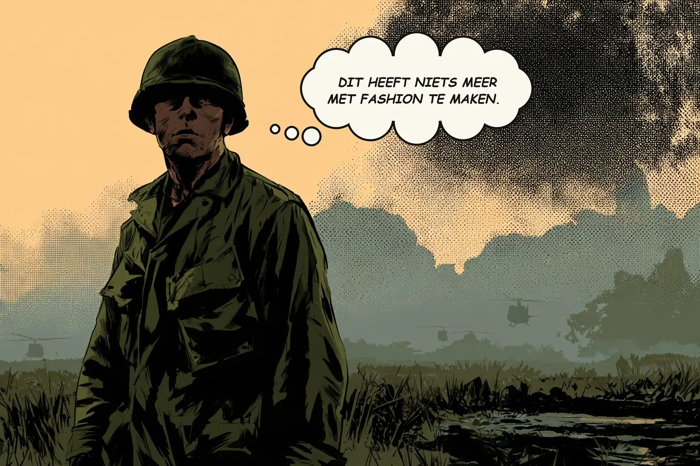
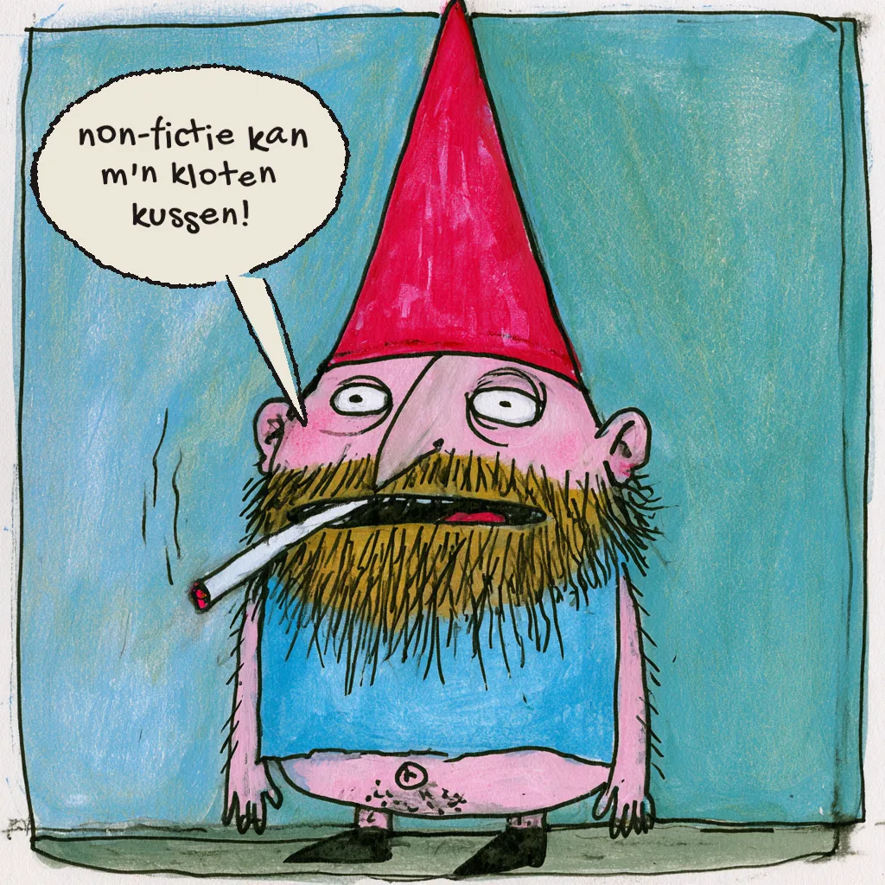

en andere snuisterijen
Het tweede kopje
Twee kopjes staan in haar keukenkast. Ze gebruikt altijd dezelfde.
Ze loopt de keuken in en weet niet meer wat ze kwam doen.
De keuken weet het wel. De koelkastdeur staat op een kier en het lampje brandt. De fles melk staat vooraan. Leeg.
Melk. Daar kwam ze voor.
De achterband van haar fiets is zacht. Dan maar lopen, langs de winkel, naar de tram.
Drie haltes verderop weet een ander huis het ook. Een wekker loopt tien minuten achter. Een man slaapt door, schiet in zijn jas en mist zijn tram. Zijn sleutelbos zit in zijn borstzak. Daar zit hij nooit.
In de winkel staat één fles melk een centimeter naar voren. Ze pakt hem.
Haar gewone tram is weg. Ze neemt de volgende en gaat achterin staan.
De rits van haar tas staat open. Ze had hem dichtgedaan.
De tram remt. De fles rolt uit haar tas, door het gangpad, langs drie paar voeten, tot tegen een schoen helemaal voorin.
De man raapt de fles op. Uit zijn borstzak glijdt de sleutelbos.
Ze loopt naar voren en raapt de sleutels op.
Een van de twee moet iets zeggen.
Drie haltes verderop loopt de wekker weer op tijd.
In haar keukenkast staat het tweede kopje vooraan.
Sunday drive
Pompeii

Camouflage

Leesvoorkeur
